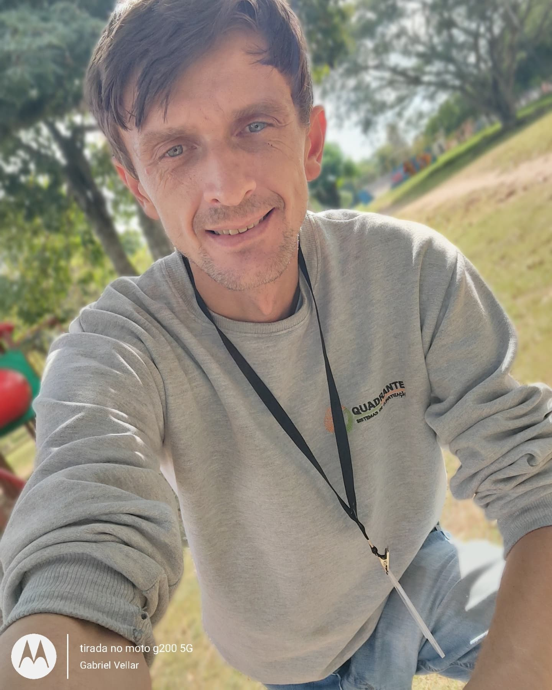

Formação

Curso Técnico em telecomunicações

Desenvolvimento Web - Faculdade Anhanguera
Carregando currículo...

Posição que busco: Analista de suporte remoto ou externo, desenvolvedor web
Curso Técnico em telecomunicações
Desenvolvimento Web - Faculdade Anhanguera
Gaúcho, solteiro, pai, estudante de desenvolvimento web, técnico em telecomunicações e hobby hardware.
Atuei na recuperação de um sistema supervisório responsável por uma automação de climatização central, em um cenário crítico onde o computador de operação apresentava falha no disco rígido e risco de indisponibilidade do sistema.
Preservar sistema operacional, supervisório, banco de dados, históricos e parâmetros sem reinstalar toda a automação.
Realizei clonagem integral do HDD para SSD, recuperação dos dados e validação operacional do supervisório.
Sistema voltou a operar corretamente, com automação validada, comandos automáticos funcionando e continuidade operacional preservada.
HTML5
CSS3
JavaScript
Bootstrap
MySQL
MariaDB